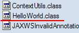
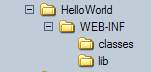
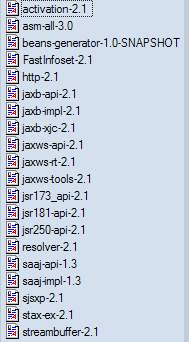
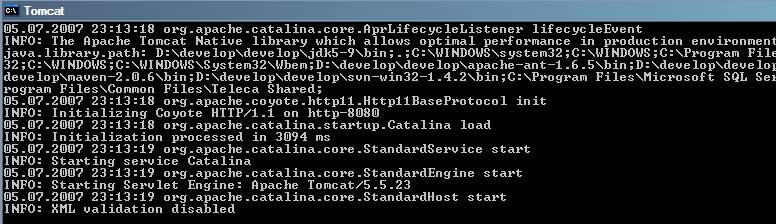
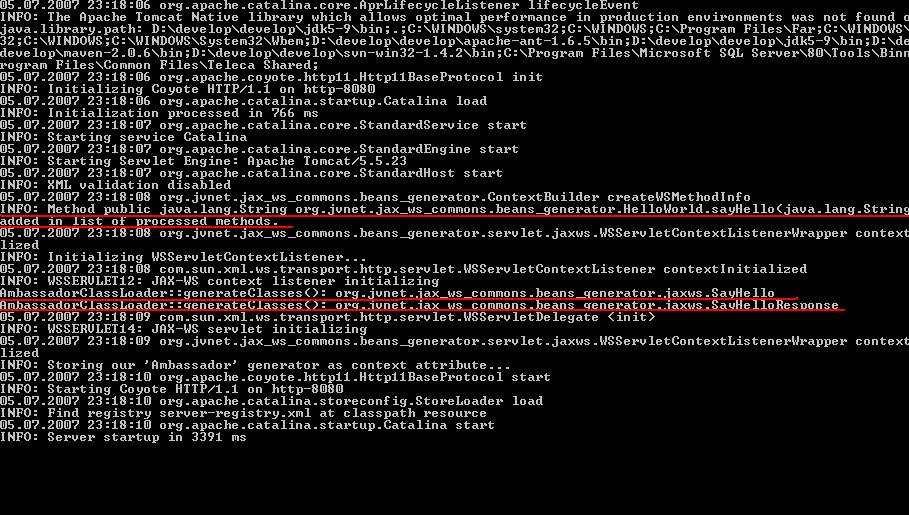
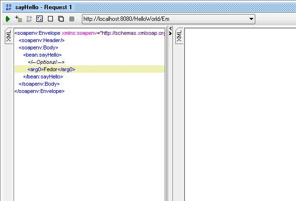
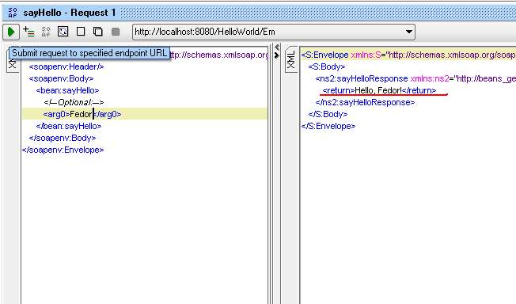

Let's create our very, very simple example...
First we create our "Hello world" application.

Second compile it.
After this create WAR for our test application.
Copy JAXWS, beans-generator and asm 3.0 jars into WEB-INF/lib. Don't forget about our "Hello world" class.
Create web.xml.
<?xml version="1.0" encoding="UTF-8"?>
<!DOCTYPE web-app PUBLIC "-//Sun Microsystems, Inc.//DTD Web Application 2.3//EN" "http://java.sun.com/j2ee/dtds/web-app_2_3.dtd">
<web-app version="2.4"
xmlns="http://java.sun.com/xml/ns/j2ee"
xmlns:xsi="http://www.w3.org/2001/XMLSchema-instance"
xsi:schemaLocation="http://java.sun.com/xml/ns/j2ee http://java.sun.com/xml/ns/j2ee/web-app_2_4.xsd">
<listener>
<listener-class>org.jvnet.jax_ws_commons.beans_generator.servlet.jaxws.WSServletContextListenerWrapper</listener-class>
</listener>
<listener>
<listener-class>org.jvnet.jax_ws_commons.beans_generator.servlet.jaxws.RequestClassLoaderSubstituter</listener-class>
</listener>
<servlet>
<servlet-name>Em</servlet-name>
<servlet-class>com.sun.xml.ws.transport.http.servlet.WSServlet</servlet-class>
</servlet>
<servlet-mapping>
<servlet-name>Em</servlet-name>
<url-pattern>/Em</url-pattern>
</servlet-mapping>
<session-config>
<session-timeout>60</session-timeout>
</session-config>
</web-app>
Create sun-jaxws.xml.
<?xml version="1.0" encoding="UTF-8"?>
<endpoints xmlns="http://java.sun.com/xml/ns/jax-ws/ri/runtime" version="2.0">
<endpoint name="Em" implementation="org.jvnet.jax_ws_commons.beans_generator.HelloWorld"
url-pattern="/Em" />
</endpoints>
Copy resulting unpacked war into a servlet container and run it.
Watch.
Invoke.
Have fun!
